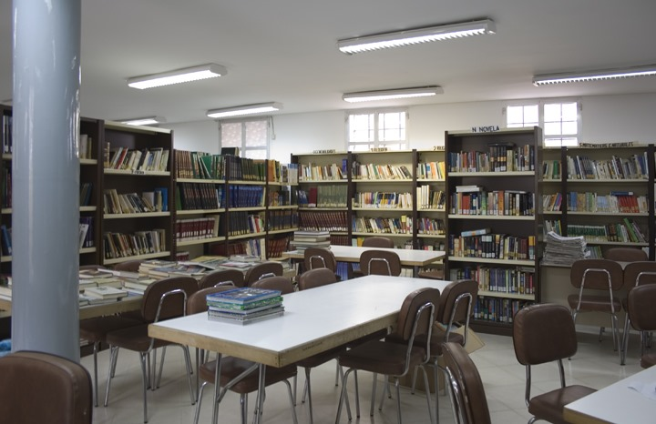
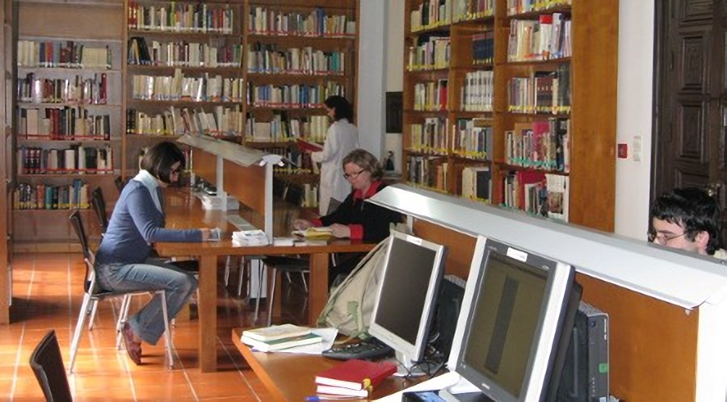
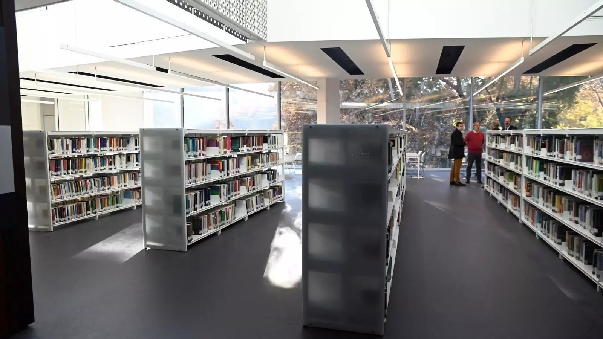

Biblioteca Provincial de Málaga

Historia de la biblioteca
La Biblioteca Pública de Málaga se originó tras la desamortización eclesiástica de Mendizábal (1835), cuando los bienes del clero fueron confiscados y los fondos bibliográficos se destinaron a bibliotecas provinciales y universitarias. Inicialmente, estuvo situada en el Instituto de Enseñanza Media.
En 1895, por Real Orden, se estableció que fuera servida por el Cuerpo Facultativo, siendo su primer director Lope Barrón y Ochoa (1895-1918), seguido por el poeta Salvador Rueda Santos (1919-1924).
En 1933, la biblioteca se trasladó a un local en la Alameda Principal, adoptando el nombre de Biblioteca Popular Ricardo de Orueta, y en 1937 pasó a llamarse Biblioteca Pública Cervantes. En 1939, se documentó su mal estado y el traslado de fondos históricos a Alcalá de Henares.
En 1940, el arquitecto Luis Moya Blanco diseñó un nuevo edificio para albergar la Biblioteca y el Archivo. La Casa de Cultura se inauguró en 1956, integrando 8.000 volúmenes procedentes de antiguos conventos.
Durante obras en el jardín se hallaron restos arqueológicos que condujeron al descubrimiento del Teatro Romano de Málaga. Por ello, en 1994, la Biblioteca fue trasladada a un edificio provisional en Avenida de Europa, bajo la gestión de la Junta de Andalucía (transferida en 1984).
Finalmente, en 2019, el ministro José Guirao anunció el nuevo proyecto para su sede definitiva en el convento de San Agustín, diseñado por el arquitecto Luis Arranz. Las obras comenzaron en 2022 y su finalización está prevista para 2026.
- -Horario de la biblioteca:
- Lunes a Viernes: 09:00-21:00
- Sábado: 9:00-14:00
- Domingo: Cerrado
- -Días de apertura: Lunes a Sábado
- -Dirección: Av. Europa, 49, Carretera de Cádiz
- -Teléfono: 951920530
- -Fax: -
- -Correo electrónico: informacion.bp.ma.ccul@juntadeandalucia.es
Biblioteca Pública Municipal Alameda
- -Horario de la biblioteca:
- Lunes a Viernes: 16:00-20:00
- Sábado y Domingo: Cerrado
- -Días de apertura: Lunes a Viernes
- -Dirección: C/ Enmedio, 46, Distrito Centro
- -Teléfono: 951192251
- -Correo electrónico: bibliotecalameda@hotmail.com
Centro de Documentación Musical de Andalucía
Historia de la biblioteca
El Centro de Documentación Musical de Andalucía (CDMA), es un organismo creado en 1987 por la Consejería de Cultura de la Junta de Andalucía con el fin de recuperar, custodiar, catalogar, clasificar y difundir el patrimonio musical creado o relacionado con Andalucía en todas sus formas.
- -Horario de la biblioteca:
- Lunes a Viernes: 9:00-14:00
- Sábado y Domingo: Cerrado
- -Días de apertura: Lunes a Viernes
- -Dirección: Carrera del Darro, 29, Albaicín
- -Teléfono: 958031644
- -Correo electrónico: informacion.cdma.ccul@juntadeandalucia.es
Biblioteca Pública del Estado - Córdoba
Historia de la biblioteca
Desde su creación, la historia de la biblioteca ha estado marcada por la provisionalidad de su ubicación. Abrió sus puertas al público por primera vez en 1850 en el edificio de la Diputación Provincial, situado en la calle Carreteras. Entre 1864 y 1878 estuvo emplazada en la Plaza del Potro, y a lo largo del siglo XX sufrió diversos traslados, siempre de carácter provisional. Entre sus sedes, cabe destacar la situada en la calle Amador de los Ríos, junto al Palacio Episcopal, donde permaneció desde 1984 hasta febrero de 2024. En esa fecha, la biblioteca se trasladó definitivamente a su actual sede, un edificio de nueva construcción ubicado en los Jardines de la Agricultura.
- -Horario de la biblioteca:
- Lunes a Viernes: 9:00-14:00
- Sábado y Domingo: Cerrado
- -Días de apertura: Lunes a Viernes
- -Dirección: Avda. América, s/n
- -Teléfono: 95735500
- -Fax: 957.355.499
- -Correo electrónico: informacion.bp.co.ccul@juntadeandalucia.es